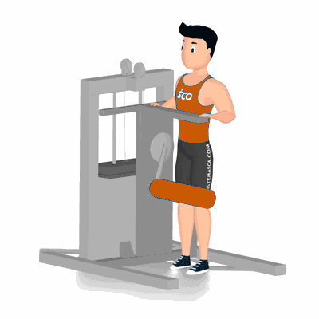

Flexão de Quadril no Apolete

Exercício para fortalecimento e hipertrofia da região das coxas, com enfoque aos músculos reto femorais, vasto laterais e mediais. Realiza com auxílio do aparelho, fácil execução. Indicado a iniciante.
Ficha Técnica
Tipo: Musculação
Grupo Muscular: Perna
Aparelho: Nenhum
Músculos: Nenhum
Como realizar
- Posicione ao lado do aparelho, manter coluna e cabeça alinhadas;
- Perna direita estendida com o pé direito firme no solo;
- Flexione o joelho esquerdo em um ângulo de 90 graus, apoiando-o no rolo, especificamente, a parte inferior do quadríceps;
- Utilize as mãos para agarrar os pegadores de apoio;
- Concentre o esforço nos músculos da coxa, utilizando a sua força, elevar o joelho direito o mais alto que conseguir;
- Retorne à posição inicial de forma controlada;
- Repita os movimentos, conforme o número de repetições orientado pelo professor.
 RC STORE
RC STORE